ls data/fastq/The Unix Shell
And an introduction to our dataset with FASTQ and FASTA files
1 The Unix Shell/Command Line Computing
Many of the things you typically do by pointing and clicking can alternatively be done with command line approaches. The Unix shell allows you to interact with the supercomputer in a command-line environment. The Code Server/VS Code software Jelmer just introduced is one of several methods available for accessing the Unix shell, and the one we’ll use through the workshop. Now that we have the platform for interacting with the supercomputer, we’ll dive into command line computing.
2 Overview
Working effectively on a remote supercomputer requires doing command-line computing. But there are more advantages to doing command line computing than just allowing you to work on a supercomputer.
2.1 Some Terminology
We’re going to focus on the practice of doing command line computing here, and not get too bogged down in to details of terminology, but let’s highlight a few terms you’re likely to run across (and hear during the workshop).
- Command Line
- Shell
- Terminal
- Console
- Bash
While it might not fly for a computer science class, for day-to-day bioinformatics, you’ll probably hear all these terms used somewhat interchangably. Basically, we’re talking about the process of interacting with your computer by giving it commands as opposed to the point-and-click way you’re likely more familiar with.
2.2 Advantages to Command Line Computing
- Interact with a remote computer
- Work efficiently with large files
- Achieve reproducibility in research
- Perform general computing tasks more efficiently
2.3 Structure Of Command Line Expressions
We’ll think of command line expressions as having 3 main parts. Don’t worry about following along here - there will be plenty of chances to try this out shortly. For now, just treat this as a demonstration and focus on these 3 components…
- Commands
- Options or Arguments
- Output
2.3.1 Command Line Commands
The prompt indicates the shell is ready for a command.

Let’s start with the ls command.

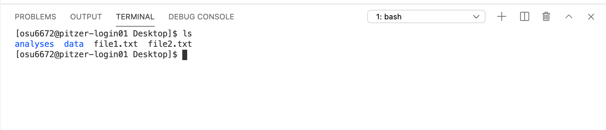
Here, we’ve given a command, ls, and the shell has returned some output – in this case, listing the contents of the current directory. It has also returned another prompt, meaning it’s ready for another command.
Now we’ll run the same command again, but this time we’ll add in an option -l (a dash followed by a lowercase L). Options allow you to modify the behavior of a command.


Notice that the same four items are returned, but this time, they’re printed in a different format, and additional information is included.
Let’s try adding one more option/argument – -h.
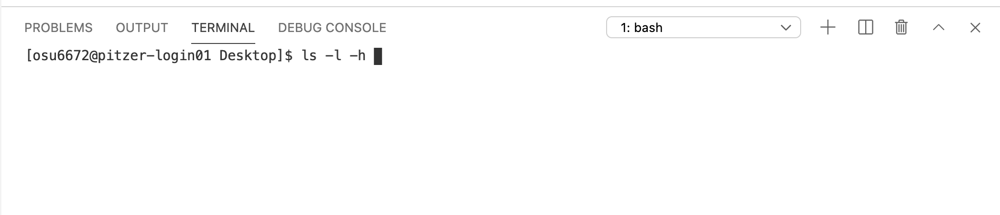

Can you pick out what -h did to modify the output? Note the difference in the format of the column reporting the sizes of the items listed.
2.4 Commonly-Used Commands
Below are some commands I find myself using quite a bit, grouped into some general categories based on their primary function…
- Getting Info About a Command
man: get help (manual) for a command
- Navigating in the Terminal
pwd: returns (prints) your working directorycd: change working directory
- Viewing Files
less: view contents of a filehead: preview contents of a filetail: print the last lines of a filecat: print contents of file to screen
- Managing/Organizing Files
ls: list contents of directorymkdir: create a new directoryrm: remove/delete a file or directorycp: copy files/directories to a new locationmv: move files/directories to a new location
- Working With Compressed Files
gzip: compress a file with gzip compressiongunzip: uncompress a gzip filezcat/gzcat: print the uncompressed contents of a compressed file to the screenunzip: uncompress a zip file
- Assessing Files
diff: print differences in two text filesmd5: get and md5 checksum for a filegrep: search a text file for lines containing a pattern of textwc: return number of lines, words, characters in a file
- Editing Files
sedawksorttruniq
- Obtaining/Sharing Files
curl: download a file from onlinesftp: transfer files between a local and remote computerwget: download a file from online
- Features
- Tab completion
- Command History (up arrow)
- Ctrl+r
- Ctrl+c
- Special Notation
|~...$PATH$HOME
- Wildcards
*?[]^
While it’s not an exhaustive list, getting a grasp on some of the commands and features above will go a long way in allowing you to start to work at command line. We won’t get to all of them in this session, but we’ll explore quite a few on this list.
3 Practice with Common Commands
Here we’ll start practicing with some common command-line commands.
Working Directories
Before we start with our first command, we should talk about directory paths and working directories. All the files on a computer exist within a hierarchical system of directories (folders). When working at command line, you are always “in” one of these directories. The directory you’re “in” at any given time is referred to as your working directory.
It’s useful to know what this is at any given time, and there’s a command that tells you: pwd. This brings us to our first command.
3.1 pwd
The pwd command prints the absolute path of your current working directory.
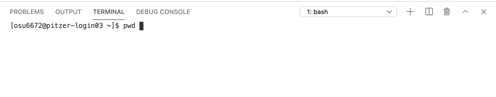
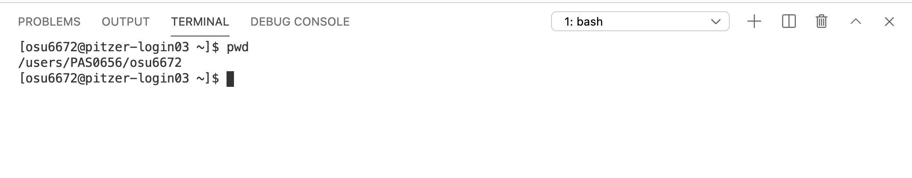
The default working directory when you log on to OSC is your HOME directory. You’ll likely make lots of use of this directory if you work at OSC, but for the workshop, we’re all going to work in the scratch directory associated with the project set up for the workshop. So we’ll move to that directory next.
3.2 cd
cd allows you to change your working directory to any directory you have permission to access on the computer you’re working on. And this is a great place to introduce Tab Completion, which you really should get in the habit of using…
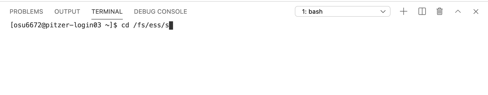
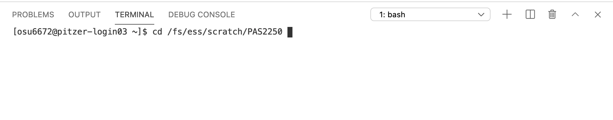
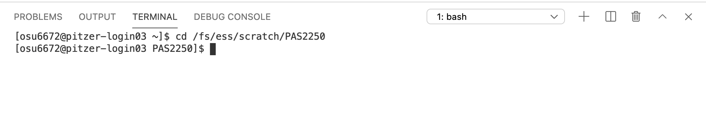


Absolute Paths vs Relative Paths
What we’ve used here is an absolute (full) path. If you want to change directories, the cd command needs to know where you want to move to. As we just saw, we can give it that information by providing the absolute path to the directory on the computer we want to move to (starting with the root directory, which is indicated by the first / in the path /fs/ess/scratch/PAS2250 above).
Providing absolute paths will always work, but it’s often a bit more typing than we need (or want) to do. An alternative is to work with relative paths. These work by assuming you’re staring in your current working directory, and then, by default, looking forward in the directory structure (or down if you like to think from top to bottom). We’ll come back to relative paths shortly.
OK, we made it to a directory created specifically for this workshop. Let’s see what’s in there.
3.3 ls
The ls command lists everything inside the current directory.


Here we see 3 directories – data, jelmer, and participants.
Let’s see what’s inside the data directory (and another good chance to try Tab Completion)…

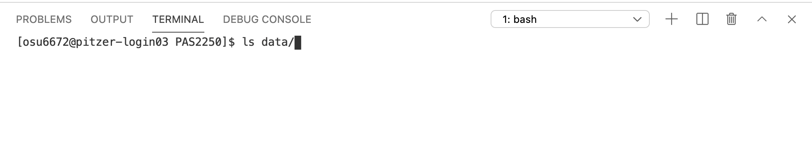
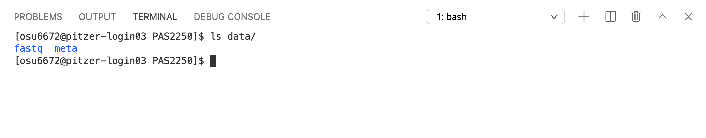
Two more directories this time. Try viewing the contents of the fastq directory yourself…
On Your Own: list the contents of a directory
Try to list the contents of the fastq directory we just saw.
Solutions (click here)
OR
cd data/fastq/
lsLet’s check to make sure we’re still in the /fs/ess/scratch/PAS2250 directory, and also remind ourselves exactly what’s in there…

If you’re not in the PAS2250 directory for some reason, you can use cd to get back there. You should see data, jelmer, and participants when listing the contents of your current directory.
Now let’s move our working directory again – this time we’ll go in to participants. We could use cd with the absolute path – similar to what we did before. However, we’ll save ourselves some typing and use a relative path. Keep using Tab Completion.

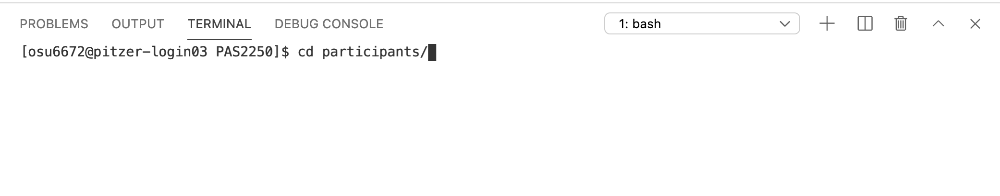

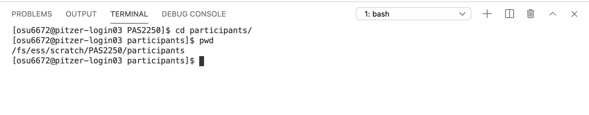
3.4 mkdir
The mkdir command allows you to create a new directory. Create one for yourself in the current directory (participants) according to this example (replace mikes_dir with a name for your folder – avoid spaces and special characters in the name)…
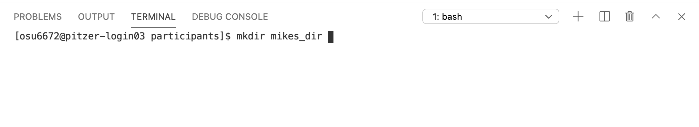
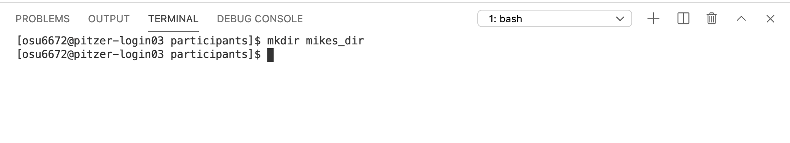
3.5 Summary Thus Far
So far, we’ve used…
pwd(print working directory)cd(change directory)ls(list)mkdir(make new directory)- Tab Completion (not really a command, but a useful feature)
We also have a directory structure that looks like…
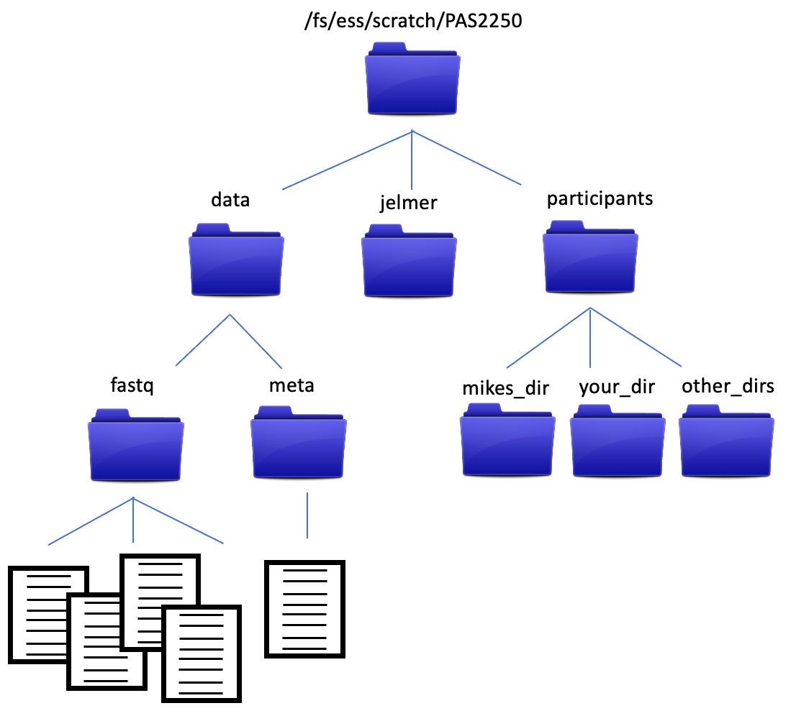
The data files in the data/fastq directory are FASTQ formatted files from an RNA experiment, and are what we’ll be analyzing as we go through the workshop. We’ll talk more about them soon, but for now, let’s make sure everyone has a copy of the data. We’ll copy the data directory and its contents into the new directory you just made.

3.6 cp
The cp command allows you to copy files or directories from one location to another. It has 2 required arguments – what you want to copy, and where you want to copy it to.
Let’s start with what we want to copy. It’s the data directory and all of its contents. Notice in the diagram above that data is at the same level in the directory structure as our current working directory, participants. This means using data as a relative path won’t work, because the computer looks down the directory structure (it will see the contents of ‘participants’). But there’s a way to deal with that. We can use .. to move us up a level in the directory structure.
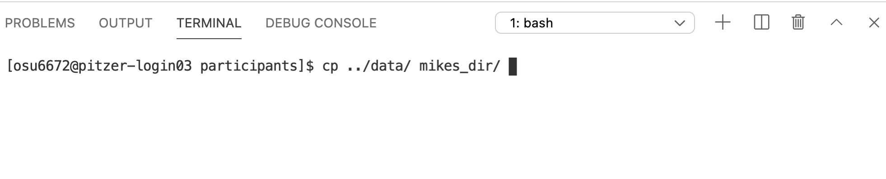
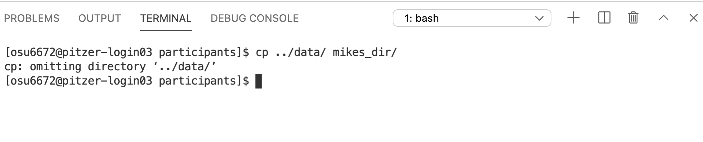
Notice we get a message that it omitted copying the directory data (which is what we wanted to copy). Indeed, the copy didn’t work (you can ls the contents of the target directory to check – it will still be empty). cp works in this simplest form with individual files, but not with directories that have contents inside them. If you want to copy a directory and all of its contents, we need one of those options that modify the behavior of the cp command. In this case, -r, which tells it to copy in a recursive manner.
And this is a good spot to introduce the Command History. At the prompt, try hitting the up arrow. A record of all your previous commands is kept, so you can scroll back through them. Use this to get the previous cp command, and then add the -r argument.

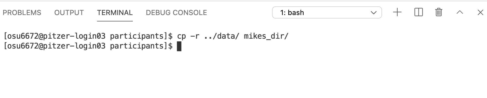
And we can check to make sure the copy worked…
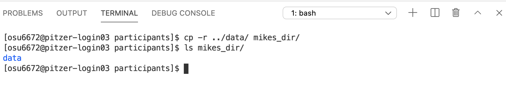
3.7 man
We haven’t talked about man yet. This stands for manual, and is a great way to get details on any command. For example, we can check out the man page for cp…


If you scroll down, you’ll see information on the -r option we just used (among others). As it says at the bottom of the page, type q to quit and get back to your command line prompt.
4 Working With Text Files
Now let’s start to explore our FASTQ files a bit. In preparation, it’s a good chance to practice a few of the commands we’ve seen so far.
On Your Own: Explore the Files
Set your working directory to the data/fastq directory inside the folder you created for yourself. Then list the contents of that fastq directory. How many files are in there? See if you can get the sizes of each file.
Hint (click here)
Use cd and a relative path (<your_dir>/data/fastq/) to change you working directory.
Once you’re there, use ls to list the contents of the current directory. Recall the option that we used above to give more detailed information about each file, or check out the man page for ls.
Solutions (click here)
cd <your_dir>/data
ls
ls -l4.1 Compressed Files
You might have noticed these files all have a .gz extension, indicating they are ‘gzip-compressed’. This is a common type of compression for large genomic-scale files. The fact that they’re compressed means we can’t just open them up and look inside – we need to uncompress them first. The gunzip command would allow us to do this – it uncompresses the file it’s given and writes the uncompressed version to a new file.
We could do this, but there’s another approach. FASTQ files can get big, and sometimes it helps to be able to keep them compressed as much as possible. It’s a good time for us to explore the pipe.
4.2 | (pipe)
We talked earlier about command line expressions having 3 parts – the command itself, options and arguments, and output. By default, any output is printed to the screen. That’s what we’ve seen so far. But you can also redirect the output, and there are three primary ways to redirect it…
- With
>, which is followed by the name of a text file the output will be written to - With
>>, which is simlar to>but will append the output (that is, it won’t overwrite any existing content like>) - With
|(pipe), which takes the output of one command and “pipes” it as input for a subsequent command.
Let’s try to preview the contents of one of the compressed files.
4.3 head
The head command is a great way to preview the contents of a text file. By default, head prints the first 10 lines of a file. Since these are FASTQ files, let’s print 8 lines (a multiple of 4 – it will become clear why shortly). We can use the -n argument to specify the number of lines that will be returned.


This isn’t what we want – we’re seeing the first 8 lines of the compressed files - not helpful.
4.4 zcat
The zcat function prints human-readable contents of a gzip-compressed file to the screen. We can try running it on the file, but remember the file is pretty big – there are lots of lines of text in there that will all get printed to the screen. Instead, we can pipe the output of zcat to the head command.


Much better – this is what the raw RNAseq data look like!
Warning
To get the number of lines (= number sequences x 4 – see below) for a gzipped FASTQ file, it’s important to use zcat x.fastq.gz | wc -l instead of wc -l x.fastq.gz, because the compressed file does not have the same number of lines!
4.5 FASTQ Format
If you’re not familiar with it, FASTQ is a very common format for genomic data files. The raw data produced by a high-throughput sequencer will almost certainly be returned to you in this format. These are plain text files, and each sequence that is read by the sequencer is represented by 4 lines:
- a name (header) line
- the sequence itself
- a plus sign
- quality scores corresponding to each base position in the sequence
4.6 wc
Since each read in a FASTQ file is represented by 4 lines, we should expect the number of lines in each of the FASTQ files to be a multiple of 4. Let’s check one. The wc command stands for word count, but by default, it returns the number of words, lines, and characters in a file. The -l option tells it to return just the number of lines, so we’ll use it since that’s all we’re interested in right now. And remember, we’ll want to do this on the uncompressed data.


4.7 grep
grep allows you to search through a file for specific patterns of text and returns the matching lines. For example, let’s say we wanted to see what sequences in sample SRR7609467 contain the sequence “ACCGATACG”:


On Your Own: Finding a Sequence
How many sequences in sample SRR7609467 contain the sequence “CCAGTA”?
Hint (click here)
Pipe the results of the grep towc -l. Alternatively, check out the -c option to grep in the man page.
Solutions (click here)
zcat SRR7609467.fastq.gz | grep 'CCAGTA' | wc -lOR
zcat SRR7609467.fastq.gz | grep -c 'CCAGTA'5 Downloading Files from the Web
At command line, you can’t just open a web browser and download a file you might want. But of course, there are commands to do that. As we move toward starting to analyze our example RNAseq dataset, one thing we’ll need is the reference genome for the species these sequences came from – in this case, Phaseolus vulgaris. Before we get that, it’s another good time to practice some of those common commands…
On Your Own: Create a Directory
Create a new (empty) directory named reference that will later store the reference genome for our analyses. Put it in your own directory inside participants. Then make this reference directory your working directory.
Hint (click here)
Use the mkdir command (and cd as necessary). Remember that .. moves you up/back one directory, and these can be combined. For example, ../../../ would move you up/back 3 directories.
Solution (click here)
mkdir ../../reference
cd ../../referenceOR
cd ../../
mkdir reference
cd reference5.1 curl
curl is one command that allows you to download files from online (wget is another). Technically, all you need for curl is the name of the command and the web address for what you want to download.
However, the default for curl is to print the downloaded contents to the screen. This usually isn’t what we want. Instead, we want to save them to a file. One option would be to redirect the output to a text file with >. But curl also has a built-in option to write the contents to a file: -o, so we’ll use that.
Since the file that gets downloaded is a gzip-compressed, FASTA-formatted text file, we’ll give the name of the file a .fa.gz extension. The reference genome for Phaseolus vulgaris is available at:
https://ftp.ncbi.nlm.nih.gov/genomes/all/GCF/000/499/845/GCF_000499845.1_PhaVulg1_0/GCF_000499845.1_PhaVulg1_0_genomic.fna.gz

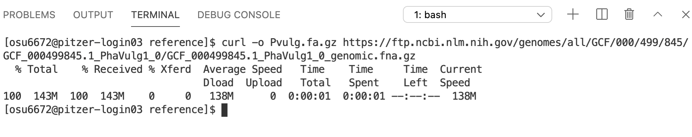
On Your Own: Preview a FASTA file
Try previewing the contents of the reference genome file you just downloaded.
Hint (click here)
Remember the file is gzip-compressed. Usezcat and pipe the results to head.
Solution (click here)
zcat Pvulg.fa.gz | headOK, now we’ve got our raw data (FASTQ) and our reference genome (FASTA). This is a good start in terms of getting ready to start analyzing the data. One more thing we can do now is try to understand a little bit about the samples themselves. There is a tab-separated text file named meta.tsv in the data/meta directory. Let’s take a look at its contents…
5.2 less
less is a command that opens up a text file within your shell. Once you’re finished viewing the file, type q to quit and return to your prompt.
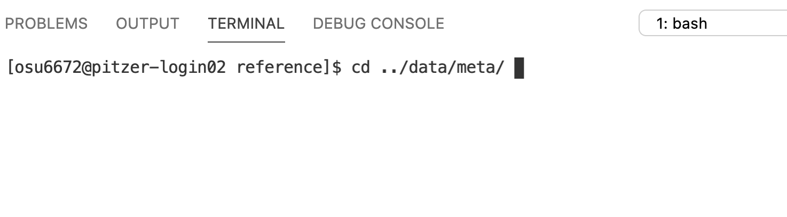


6 Further resources
- https://www.learnenough.com/command-line-tutorial
- https://cvw.cac.cornell.edu/Linux/
- http://www.ee.surrey.ac.uk/Teaching/Unix/
- https://www.udacity.com/course/linux-command-line-basics–ud595
- http://moo.nac.uci.edu/~hjm/How_Programs_Work_On_Linux.html
- OSC’s UNIX Basics